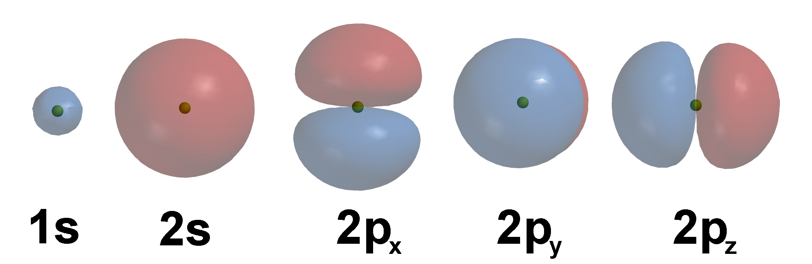
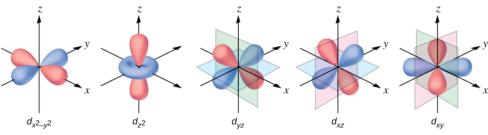
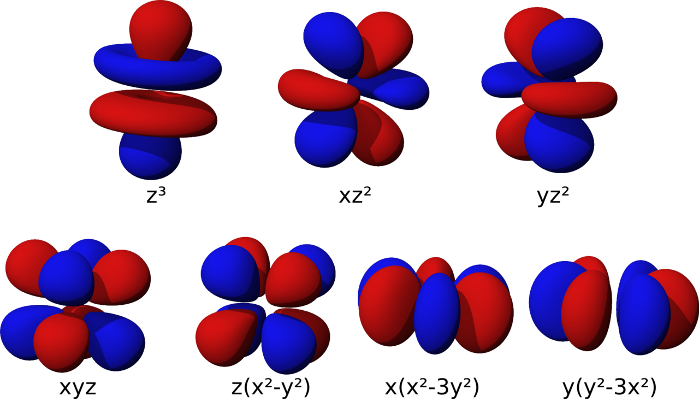
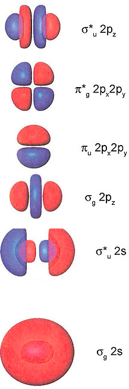
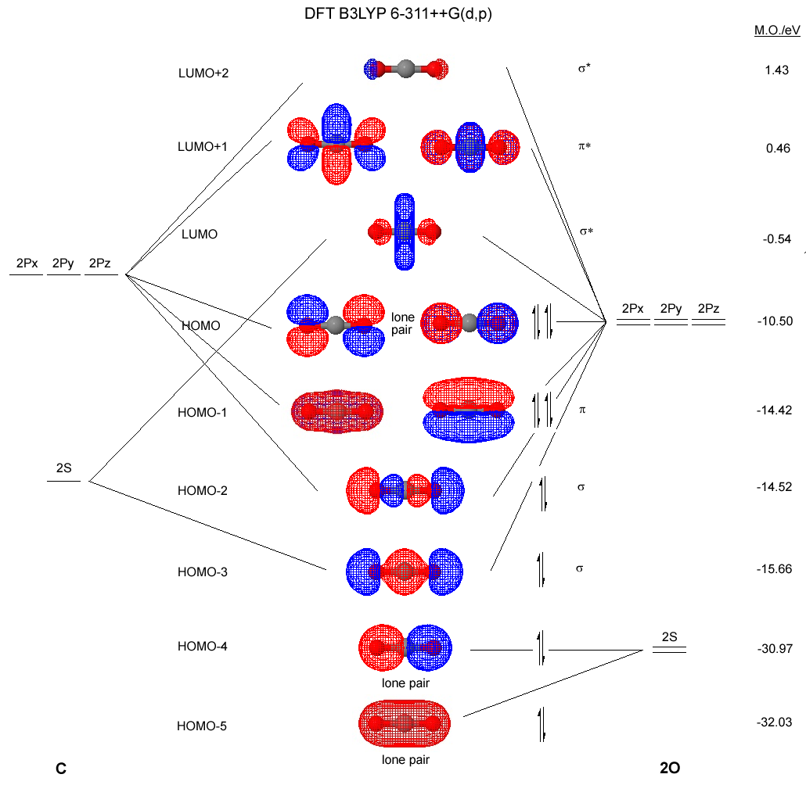

Atomové a molekulové orbitaly
Zpět na seminář
Atomové orbitaly

Atomové orbitaly s a p. Zdroj:
Benjah-bmm27/Commons
,
CC BY 4.0

Atomové orbitaly d. Zdroj:
OpenStax/Commons
,
CC BY 4.0

Atomové orbitaly f. Zdroj:
A2569875/Commons
,
CC BY 4.0
Molekulové orbitaly

Molekulové orbitaly ve dvouatomových molekulách. Zdroj:
Tem5psu/Commons
,
CC BY 4.0

Molekulové orbitaly v CO
2
. Zdroj:
ChiralJon/Commons
,
CC BY 4.0